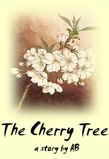

Many years ago, in what is now the Ishikawa prefecture
of Japan, there lived a young man named Tetsuji. Tetsuji lived and worked
on a small farm, where his family had grown cherry trees for generations.
Tetsuji's parents had been killed in an earthquake when he was only a small
boy, leaving Tetsuji in the care of his grandmother. Together they had tended
the orchard and kept the farm alive, but only barely, for they were only
a child and an old woman, and had no money to hire someone to help them
pick cherries during the harvest.
Through diligence and perseverance, however, Tetsuji and his grandmother
survived, and Tetsuji grew into a strong and capable man. Eventually he was
able to take care of the orchard himself, leaving his grandmother, now older
and more frail than when Tetsuji was orphaned, to live out her twilight years
in relative comfort. Grandmother now tended their household, and taught
Tetsuji the secrets of cherry growing and of living a moral life, all the
things Tetsuji's parents would have taught him, had they lived.
"You are almost thirty years old, Tetsuji-chan," Grandmother said
to Tetsuji one evening, as they ate their supper. "It is long past
time that you found yourself a wife."
Tetsuji laughed. "Where am I to find a wife, then?" he asked.
"There are only a handful of women in our village who are unmarried
and of suitable age, and they are as plain and dull as sticks of wood!"
"If you do not marry," Grandmother countered, "you will die
childless and alone, and our farm and family name will be lost forever."
"If I am to suffer the torment that comes of marrying and living with
a woman," Tetsuji replied, "she must be worth the trouble!"
Then Tetsuji told Grandmother of the dream he had had while napping in the
cherry orchard that afternoon.
"She was beautiful, with hair as black as coal and skin as fair and
smooth as the first snowfall of winter," Tetsuji said, his eyes glazing
over with remembered desire. "And her lips were as red as ripe cherries.
She came to me as I slept beneath a tree, and woke me with a kiss. When
I opened my eyes, she was gone."
Grandmother clucked her disapproval. "A dream cannot bear you sons!"
she snapped. But Tetsuji only laughed again, and ambled off to his night's
rest.
• • •
The next day, Grandmother was taking her morning stroll through the orchard
when she heard the faint sound of weeping. Bewildered, she looked all about
her, but her aging eyes could not discern the source of the sound.
"Who is there?" Grandmother demanded. But there was no response,
and the weeping continued.
Though Grandmother's eyesight had grown dimmer with age, her sense of hearing
was as sharp as when she had been a little girl. Quickly she made her way
through the trees, following the sobbing voice -- a woman's, she determined
-- to a tall, broad cherry tree in the heart of the orchard. She looked
all around, but could see no one.
Then she looked up.
In the branches of the tree sat a young woman. Her hair was as black as
coal. Her skin was as fair and smooth as the first snowfall of winter. And
her lips...
Grandmother blinked. No, the girl was not sitting in the branches after
all -- she was floating among them!
"Ahhh!" Grandmother cried, nearly falling backward. This was no
woman after all, but a tree spirit.
Feeling the old woman's frightened eyes upon her, the tree spirit-woman
ceased her weeping and regarded Grandmother calmly. Grandmother stared back
at the tree spirit with awe and curiosity, unable to speak.
At last Grandmother regained her voice. "You must be the woman who
came to my grandson in his dream," she said.
The spirit-woman nodded, smiling slightly despite her earlier display of
sorrow.
"I heard you weeping, just now, as I passed by," Grandmother said.
She stepped closer to the tree-spirit and peered at her with narrowed eyes.
"What cause have you for sadness, Tree Spirit, here in the warm sunshine
of our cherry orchard? Are you not well cared for?"
The spirit-woman's smile faltered. She shrugged, and looked away into the
distance.
"There is something you are lacking." Grandmother said. She followed
the spirit-woman's gaze over the treetops to their little house, and understood
at once. "You are in love with my grandson," she whispered, her
eyes drifting back to the ghostly face.
The spirit-woman nodded again, her exquisite features growing even more
beautiful in melancholy.
Had the girl been a farmer's daughter from the village, Grandmother would
even now have her arm in a bony grip, dragging her back to the farmhouse
to make her introductions to Tetsuji. But she knew that for a spirit to
love a human was a dangerous thing, for both lover and loved. Grandmother
had heard many stories, as a child on the lap of her own grandmother, of
the
oni that inhabited the trees and stones and the very wind itself.
She knew that when humans trespassed into the spirit world, tragedy was
often the result.
Then she thought of Tetsuji, imagined him dying childless and alone in his
bed, and she knew her course.
• • •
Sakura drifted among the delicate branches of her tree, waiting for Tetsuji
to finish his morning's chores. Soon, as he had almost every day of his
life, Tetsuji would sit down by the tree, and eat the lunch his grandmother
had packed for him. Shortly thereafter he would drift off to sleep with
his head resting against the trunk.
She loved Tetsuji, had loved him since he was a boy. Sakura remembered the
first day that Tetsuji had come to her, having spent the better part of
the day pruning and watering in the orchard. The exhausted child had collapsed
in a hollow made by the roots of her tree, and Sakura, taking pity on the
boy, shaded him from the late summer sun.
Tetsuji had come back the next day, and the next, and in this way he, without
having the slightest inkling of what he was doing, became woven into Sakura's
life. As he had grown into a handsome, lively young man, full of laughter
and kindness, Sakura's motherly feelings toward Tetsuji changed to something
else, something warm and prickly with electricity. It was years before Sakura
realized that she was falling in love with Tetsuji, and by then it was too
late.
Sakura knew that to love a human was a joyless act, for the object of her
infatuation would be forever unaware of the passion she felt for him. Her
love would be unrequited, no more to him than a vision in a dream. Still,
she had given her heart to this young man, and once given it could not be
taken back. The wind of destiny blew hard and soft, and when it blew hard,
you had little choice but to bend in whatever direction it chose.
So each day Tetsuji came to Sakura, and Sakura caressed Tetsuji as he took
his afternoon nap. And each day Tetsuji went away, blissfully ignorant --
but for the occasional dream -- of Sakura's affections, leaving the tree
spirit to float amongst her branches and weep from the ache in her heart
that would never end, so long as Tetsuji lived.
Then the old woman had come, and wisdom she brought with her, spirit lore
passed down through countless generations. The old woman spoke to Sakura,
who could not reply but could listen well enough. She told Sakura to put
her heart in the fruit from her tree, and to offer it to Tetsuji. If Tetsuji
ate the fruit, he would swallow her heart, and all the love that she held
inside it would take root inside him, and through the blossoming of that
love Sakura could enter the human world, and love Tetsuji as a mortal woman.
"But Tetsuji must never know your true nature," the old woman
had warned her. "For if he did, no matter how much he loved you, he
would also fear you just a little bit. Over time, that fear, like love,
would take root and grow. And soon, Tetsuji would become a stranger to you."
Sakura had done all that the old woman had instructed. She had placed her
heart in a cherry, the darkest and ripest she had to offer. Soon Tetsuji
would come, and Sakura would drop the cherry into his lap, and hope for
the best.
• • •
Tetsuji did come, and when Sakura dropped the cherry into his lap, Tetsuji
held it up, admiring its perfect color and ripeness, and popped it into
his mouth.
When, a few moments later, the woman from Tetsuji's dreams emerged from
behind the tree, nearly causing him to faint dead away, Tetsuji had neither
cause nor opportunity to connect one event with the other.
• • •
The wedding was set as soon as custom would permit; Tetsuji, anxious and
impatient to begin his new life with his newfound love, cajoled and begged
Grandmother to allow them to marry at once, but the old woman held fast.
There was already enough scandal in the village, swarms of gossip surrounding
this mysterious girl who had appeared out of nowhere, without family or
even a friend to vouch for her.
When Tetsuji's excitement had abated enough for practical matters to enter
his head, he realized that he had no wedding gift to give his betrothed.
Never a wealthy man, Tetsuji could hardly afford the fine silks or jewelry
that other grooms offered their new brides on their wedding day. Then, as
he stood at the entrance of his house and looked out at his orchard, an
idea struck him, and Tetsuji grinned widely.
• • •
The wedding day arrived at last, and Tetsuji, filled with equal parts joy
and terror, waited for his wife-to-be at the village temple. Grandmother
stood at his side, watching Tetsuji's nervousness with amusement.
"Where is she?" Tetsuji wondered, pacing the floor of the temple
in agitation.
"Be still, Tetsuji-chan," Grandmother said, patting his arm. "Sakura
will be here soon, and you will be on your way to your marriage bed soon
enough."
Tetsuji blushed furiously at that, and resumed pacing.
An hour later, when Sakura had still not arrived, Tetsuji asked again: "Where
is she?"
"I do not know," Grandmother replied, now sharing her grandson's
anxiety.
At that moment, a man entered the temple. "Tetsuji-san?" the man
inquired, looking about. Grandmother recognized him after a moment: Mura,
the village woodcarver.
Tetsuji strode over to Mura, and the two men bowed briefly. "Tetsuji-san,"
Mura said, gesturing toward the door, "your gift is ready."
"Wonderful!" Tetsuji exclaimed. "I didn't expect you to be
done so quickly, Mura-san. You are truly a master."
"Thank you, Tetsuji-san!" Mura bowed modestly and left.
Grandmother frowned. "What gift is this?" she asked. "It
sounds rather extravagant for a young man of limited resources."
Tetsuji beamed. "But we are rich in resources, Grandmother," he
said. "After all, do we not have an orchard full of the finest cherrywood
in all of Japan? I decided to make a gift of furniture for my new bride.
With the help of Mura's able hand, she shall have a bridal chest that even
the Emperor would envy!"
Grandmother blanched and swayed on her feet. Tetsuji rushed over to steady
her. "Grandmother," Tetsuji said, "what's wrong?"
"Which tree did you cut down for this gift?" Grandmother asked
quietly, already knowing the answer.
"The tallest one, in the middle of the orchard," Tetsuji replied.
"Why?"
"Oh, you foolish boy," Grandmother sighed. "Did you never
wonder how Sakura came to be in your life? She is an
oni, a tree
spirit, from the very cherry tree that you slept under since you were a
boy. For the sake of her love for you, she chose to enter the mortal world,
to be with you."
Tetsuji's eyes widened with dawning horror. "You mean...that tree...."
Grandmother nodded wearily. "Yes, that tree that you had cut down.
Sakura's spirit lived still in that tree. By cutting it down, you severed
her spirit from this world. Now Sakura is lost to you forever. She is doomed
to wander the world as a lost soul."
Crushed by his grief, Tetsuji could not speak. He bolted from the temple
and ran all the way back to their farm. He ran until he had reached the
middle of the orchard, where only the shorn trunk of Sakura's tree now lay.
He collapsed on top of the trunk, tears spilling out over the bark of the
tree, and mingling with rivulets of amber sap.
• • •
For ten days Tetsuji lay against the trunk of the cherry tree. He refused
to leave, or to take food or water, despite Grandmother's desperate entreaties.
At the end of ten days, Tetsuji died, his arms still clasped about the trunk.
The final words Grandmother heard Tetsuji utter were instructions to bury
him at the base of Sakura's cherry tree. And so he was.
Six weeks later, Grandmother came to the center of the orchard to find a
sapling growing in the earth where she had buried Tetsuji. The cherry that
Tetsuji had swallowed had remained inside him, nestled in his heart. After
his death, as Tetsuji's body mingled with the soil, it had taken root.
Years later, after everyone who knew the names of Tetsuji and Sakura and
remembered their tragic tale had long since passed on, visitors to a certain
small village in the Ishikawa prefecture were greeted in springtime with
the most beautiful display of cherry blossoms in all of Japan. And they
would marvel especially at the cherry tree in the heart of the orchard,
the tallest of them all, for it was quite unique: out of its single trunk
grew twin trees, entwined, branches reaching out to the sky and swaying
gently in the spring breeze.
The End